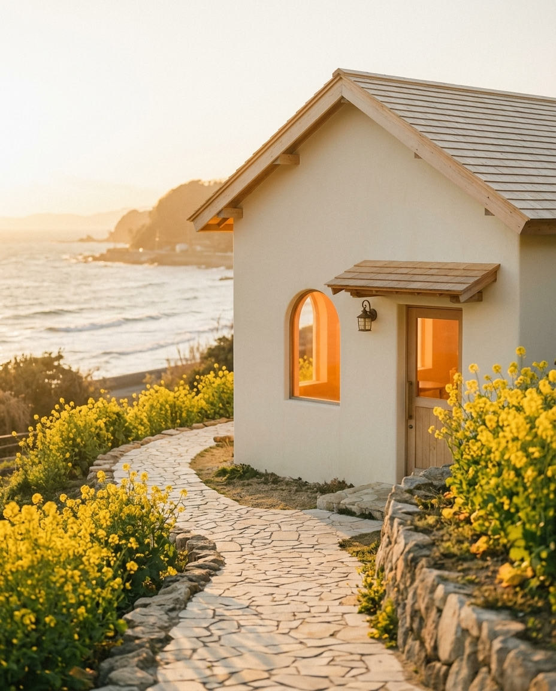
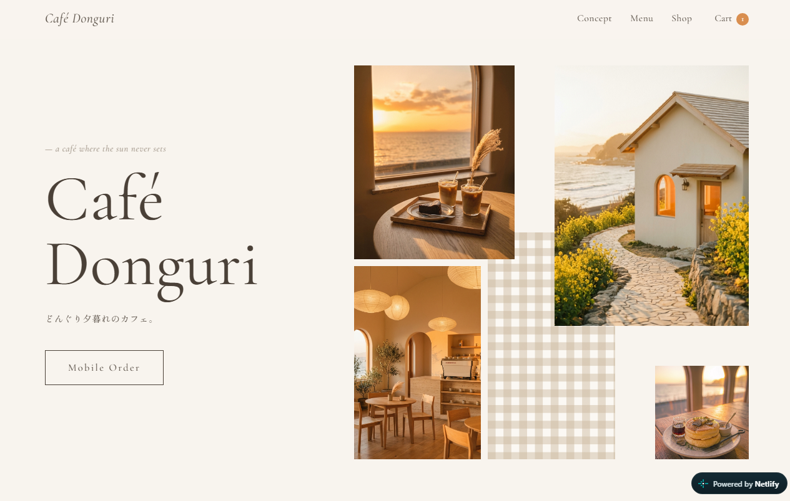
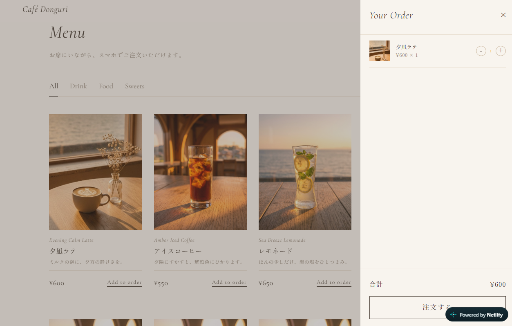

Web Site / Mobile Order
Café Donguri
架空カフェの紹介＋モバイルオーダーサイト

- 制作
- 2026.10.11
- 種類
- 架空カフェの公式サイト＋モバイルオーダー
- 担当
- 企画・世界観・デザインの方向性・メニューと価格の設計・画像生成のディレクション
- 使用技術
- HTML / CSS / JavaScript / Netlify / Gemini（画像生成）/ Claude（AIコーディング）
Concept
「海辺でゆったり過ごしたい20〜30代」を想定した、架空カフェの公式サイト。
写真や雰囲気でお店を選ぶ人に世界観を伝えることと、
スマホから迷わず注文できることの両立を目指しました。
Point

01 デザイン
「夕暮れの光」をテーマに、ベージュ×オレンジの配色と明朝体で、落ち着いた空気感を表現。ムードボードで方向性を決めてから AI で画像を生成し、全体のトーンを統一しました。

02 使いやすさ
メニューの絞り込みから、カートの個数変更・合計金額の自動計算・注文完了まで、ページを移動せずに完結。スマホでは画面下にカートバーを固定し、いつでも注文内容を確認できるようにしました。
03 リアリティ
価格は実在するカフェの相場を調べて設定しました。
Process
企画・世界観の設定・デザインの方向性・メニューと価格の設計・画像生成のディレクションを担当。
コーディングは AI（Claude）の支援を受けながら、内容を理解したうえで調整・修正して仕上げました。